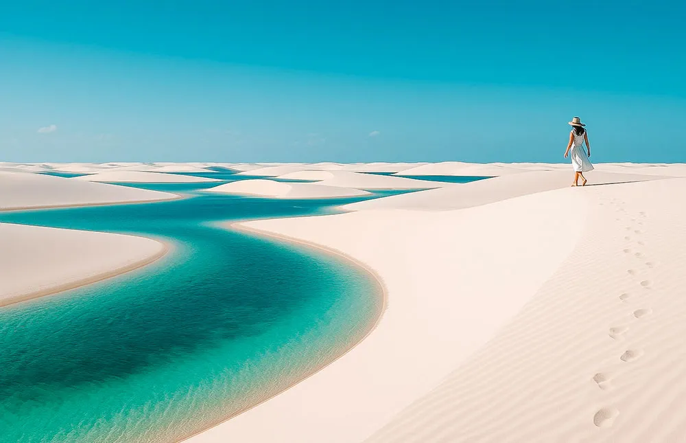
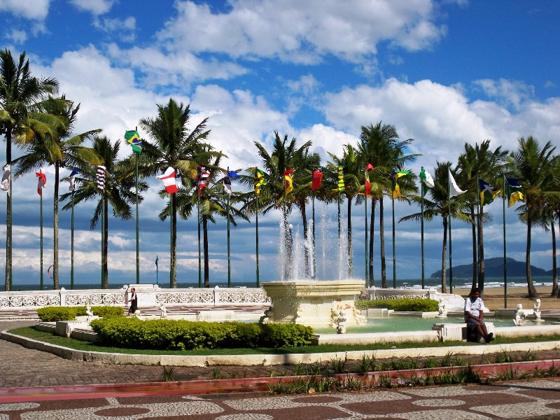
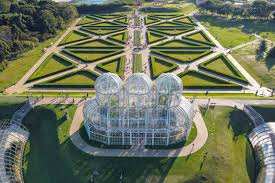

Quem Sou Eu
Meu nome é Pedro Nakamura, tenho 18 anos e atualmente curso Engenharia de Software na UniFil, em Londrina. Também trabalho na RuralService, em Rolândia.
Sou apaixonado por tecnologia, desenvolvimento de software e inovação.
Hobbies
Nos meus momentos livres gosto de tocar guitarra, jogar basquete e estudar assuntos relacionados à tecnologia.
Santos Futebol Clube
Sou torcedor do Santos Futebol Clube desde criança. Sempre acompanhei a história do clube e seus grandes jogadores.
Lugares que Conheci
Já visitei lugares incríveis como Lençóis Maranhenses, Santos e Curitiba.
Minha viagem para os Lençóis Maranhenses foi inesquecível, com suas dunas de areia branca e lagoas cristalinas.

Em Santos pude conhecer as praias, o centro histórico, o Porto de Santos e a Vila Belmiro.

Curitiba me impressionou pela organização da cidade, arquitetura moderna e parques muito bem cuidados. Também visitei um shopping que possuía uma quadra oficial da NBA.
